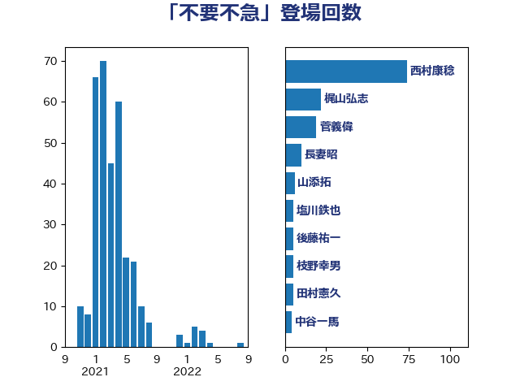

単語「不要不急」

| 西村康稔 | 自由民主党 | 74 回 |
| 梶山弘志 | 自由民主党 | 22 回 |
| 菅義偉 | 自由民主党 | 19 回 |
| 長妻昭 | 立憲民主党 | 10 回 |
| 山添拓 | 日本共産党 | 6 回 |
| 塩川鉄也 | 日本共産党 | 5 回 |
| 後藤祐一 | 立憲民主党 | 5 回 |
| 枝野幸男 | 立憲民主党 | 5 回 |
| 田村憲久 | 自由民主党 | 5 回 |
| 中谷一馬 | 立憲民主党 | 4 回 |
| 浦野靖人 | 日本維新の会 | 4 回 |
| 篠原孝 | 立憲民主党 | 4 回 |
| 茂木敏充 | 自由民主党 | 4 回 |
| 赤澤亮正 | 自由民主党 | 4 回 |
| 小西洋之 | 立憲民主党 | 3 回 |
| 杉久武 | 公明党 | 3 回 |
| 萩生田光一 | 自由民主党 | 3 回 |
| 逢坂誠二 | 立憲民主党 | 3 回 |
| 階猛 | 立憲民主党 | 3 回 |
| 麻生太郎 | 自由民主党 | 3 回 |
| 佐藤英道 | 公明党 | 2 回 |
| 倉林明子 | 日本共産党 | 2 回 |
| 加田裕之 | 自由民主党 | 2 回 |
| 吉川沙織 | 立憲民主党 | 2 回 |
| 小沼巧 | 立憲民主党 | 2 回 |
| 岩屋毅 | 自由民主党 | 2 回 |
| 新垣邦男 | 立憲民主党 | 2 回 |
| 本村伸子 | 日本共産党 | 2 回 |
| 清水貴之 | 日本維新の会 | 2 回 |
| 美延映夫 | 日本維新の会 | 2 回 |
| 馬場伸幸 | 日本維新の会 | 2 回 |
| 三原じゅん子 | 自由民主党 | 1 回 |
| 中野洋昌 | 公明党 | 1 回 |
| 串田誠一 | 日本維新の会 | 1 回 |
| 伊佐進一 | 公明党 | 1 回 |
| 佐藤啓 | 自由民主党 | 1 回 |
| 城井崇 | 立憲民主党 | 1 回 |
| 大口善徳 | 公明党 | 1 回 |
| 宗清皇一 | 自由民主党 | 1 回 |
| 宮崎政久 | 自由民主党 | 1 回 |
| 宮本徹 | 日本共産党 | 1 回 |
| 小倉將信 | 自由民主党 | 1 回 |
| 小熊慎司 | 立憲民主党 | 1 回 |
| 山下芳生 | 日本共産党 | 1 回 |
| 山際大志郎 | 自由民主党 | 1 回 |
| 岡本あき子 | 立憲民主党 | 1 回 |
| 工藤彰三 | 自由民主党 | 1 回 |
| 徳永エリ | 立憲民主党 | 1 回 |
| 本田太郎 | 自由民主党 | 1 回 |
| 東徹 | 日本維新の会 | 1 回 |
| 柚木道義 | 立憲民主党 | 1 回 |
| 森山浩行 | 立憲民主党 | 1 回 |
| 森本真治 | 立憲民主党 | 1 回 |
| 櫻井周 | 立憲民主党 | 1 回 |
| 武田良太 | 自由民主党 | 1 回 |
| 江島潔 | 自由民主党 | 1 回 |
| 浜野喜史 | 国民民主党 | 1 回 |
| 浮島智子 | 公明党 | 1 回 |
| 海江田万里 | 立憲民主党 | 1 回 |
| 渡辺周 | 立憲民主党 | 1 回 |
| 牧原秀樹 | 自由民主党 | 1 回 |
| 田島麻衣子 | 立憲民主党 | 1 回 |
| 田村まみ | 国民民主党 | 1 回 |
| 田村智子 | 日本共産党 | 1 回 |
| 白石洋一 | 立憲民主党 | 1 回 |
| 石井正弘 | 自由民主党 | 1 回 |
| 石井苗子 | 日本維新の会 | 1 回 |
| 石川大我 | 立憲民主党 | 1 回 |
| 礒崎哲史 | 国民民主党 | 1 回 |
| 稲津久 | 公明党 | 1 回 |
| 簗和生 | 自由民主党 | 1 回 |
| 緑川貴士 | 立憲民主党 | 1 回 |
| 落合貴之 | 立憲民主党 | 1 回 |
| 蓮舫 | 立憲民主党 | 1 回 |
| 谷合正明 | 公明党 | 1 回 |
| 赤羽一嘉 | 公明党 | 1 回 |
| 里見隆治 | 公明党 | 1 回 |
| 長坂康正 | 自由民主党 | 1 回 |
| 高木かおり | 日本維新の会 | 1 回 |
| 高橋光男 | 公明党 | 1 回 |